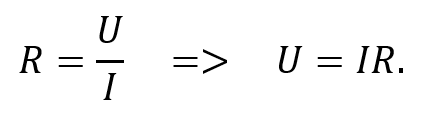
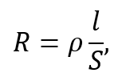
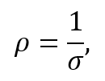
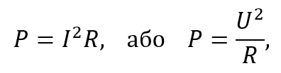
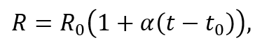

Резистор. Принцип роботи та характеристики

Рисунок 3.1.1. Умовне позначення резистора
Резистор – пасивний елемент електричних ланцюгів із постійним або змінним опором. Його основні призначення – лінійне перетворення сили струму в напругу і навпаки, обмеження струму, поглинання й інші типи перерозподілу електроенергії. Резистори містяться майже у всіх електронних і електричних пристроях сьогодення. У схемах резистор позначається символом R, а його умовне графічне зображення наведено на рисунку 3.1.1.
Основною характеристикою резисторів є електричний опір R – скалярна фізична величина, що характеризує властивість провідника створювати протидію проходженню електричного струму. Опір вимірюється в Ом (Ω), 1 Ом = 1 В/А.
Згідно із законом Ома, сила струму на ділянці електричного кола змінюється прямо пропорційно прикладеній напрузі. У такому разі електричний опір є коефіцієнтом пропорційності між напругою U і струмом I:

Закон Ома для ділянки кола виконується, коли вона є однорідною, а електричний опір її елементів залишається сталим (для металевих провідників – за умови постійної температури).
Якщо умови закону Ома для ділянки кола виконуються, опір R можна виразити через лінійні розміри провідника та його питомий опір – фізичну величину, яка кількісно характеризує здатність певної речовини створювати протидію проходженню електричного струму. У цьому випадку опір визначається за формулою:

де ρ – питомий опір матеріалу провідника, l – його довжина, S – площа поперечного перерізу.
Питомий опір є величиною, оберненою до питомої провідності – характеристики, що визначає здатність матеріалу проводити електричний струм:

де ρ – питомий опір, σ – питома провідність.
Номінальне значення електричного опору резистора, як і в багатьох інших компонентів, в дійсності може відрізнятися від фактичного. Таке відхилення від номінальної величини називають допуском. Сучасні резистори випускаються з допуском від ±0,01% до ±10%.
Резистор, на відміну від конденсатора та індуктивності, призначений для розсіювання електричної енергії. Тому для нього важлива така характеристика, як номінальна потужність розсіювання – максимальна безперервна потужність, яку резистор може розсіювати без деградації або виходу з ладу.
У будь-який момент часу потужність, яку розсіює резистор, можна розрахувати через вирази:

де P –потужність, що розсіюється на резисторі, R – його опір, I – струм, що протікає крізь резистор, U – напруга на його виводах.
Ця потужність, поглинаючись резистором, перетворюється на тепло, яке повинно розсіюватися корпусом резистора до того моменту, як його температура підвищиться до критичної. Тому номінальна потужність визначає теплову межу, до якої компонент підтримує стабільні значення опору та структурну цілісність.
Якщо середня потужність, що розсіюється резистором, перевищує його номінальну потужність розсіювання, резистор може почати пошкоджуватися, постійно змінюючи свій опір. Надмірне розсіювання потужності може підвищити температуру резистора до критичної точки, коли він може згоріти сам і спалити друковану плату або сусідні компоненти, чи навіть спричинити пожежу. Існують вогнетривкі резистори, які виходять з ладу перш ніж небезпечно перегріються.
Опір металевих і дротяних резисторів залежить від їх температури. Для опису цієї залежності існує така характеристика, як температурний коефіцієнт опору резистора (ТКО або α). Значення ТКО показує, наскільки змінюється опір резистора за підвищення його температури на 1 °С. Температурну залежність опору можна виразити формулою:

де α – температурний коефіцієнт опору, t – поточна температура, R – опір провідника за температури t, t0 – початкова (еталонна) температура, зазвичай 20 °С, R0 – опір за температури t0.
Така залежність опору від температури дозволяє використовувати резистори як високоточні термометри.
Електрична міцність – це здатність матеріалу або елемента електричного кола (у нашому випадку – резистора) витримувати дію напруги, не переходячи у стан пробою. Вона визначає максимальну напругу, за якої ізоляція або робочий елемент ще зберігає свої діелектричні властивості, але лише на короткий час. Якщо прикладена напруга перевищує цей поріг, у матеріалі виникає пробій, що призводить до різкого зменшення опору та появи неконтрольованого струму, а отже – може вивести резистор і всю схему з ладу. Значення електричної міцності залежить від типу матеріалу, товщини шару ізоляції, температури, вологості та наявності механічних пошкоджень.
Навіть ідеальний резистор створює певний електричний шум, якщо його температура вища за абсолютний нуль. Це явище називають тепловим шумом. Він виникає внаслідок хаотичного руху частинок матеріалу всередині резистора. Виходячи з цього, шум існує в резисторі завжди, незалежно від того, до якого джерела (напруги чи струму) його підключено або чи підключено взагалі. Уникнути теплового шуму майже неможливо в ідеальних умовах, не кажучи вже про реальні. Проте існує можливість відфільтрувати цей шум, який ще називають шумом провідності, таким чином зменшивши його рівень у сигнальному колі. Це досягається за рахунок обмеження смуги частот, у якій знаходиться корисний сигнал кола.
Як і будь-які інші електричні компоненти, резистори мають межу своїх можливостей, перевищення якої призводить до погіршення функціонування та їхнього передчасного старіння. Стабільність резисторів характеризується зміною величини опору внаслідок впливу зовнішніх (температури, вологості) та/або внутрішніх (фізико-хімічні процеси у провідному шарі) чинників. Такі зміни можуть бути як оборотними (властивості опору відновлюються після припинення дії чинника), так і необоротними (властивості не відновлюються). Необоротні зміни, зумовлені тривалою дією підвищеної температури, електричного навантаження, вологості та старінням матеріалів, призводять до поступового погіршення параметрів резистора. Саме сукупність таких процесів під час експлуатації або зберігання і визначає старіння резисторів.